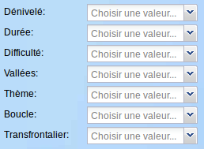
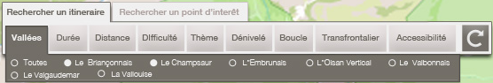
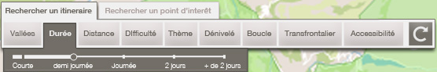
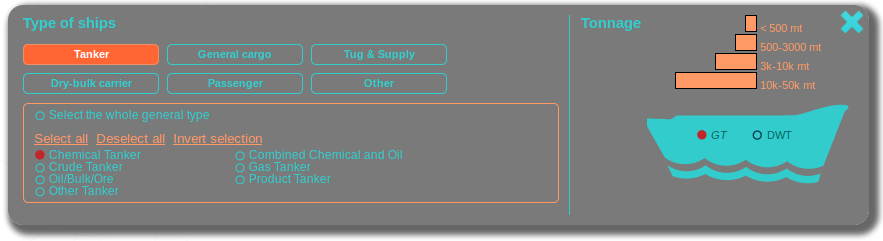
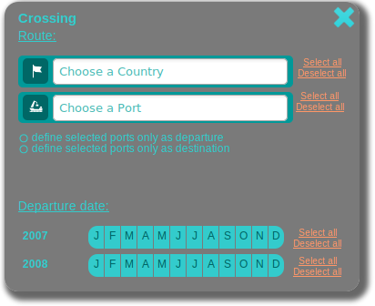
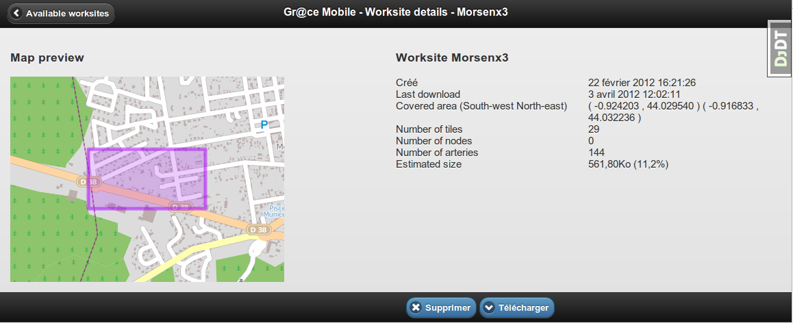
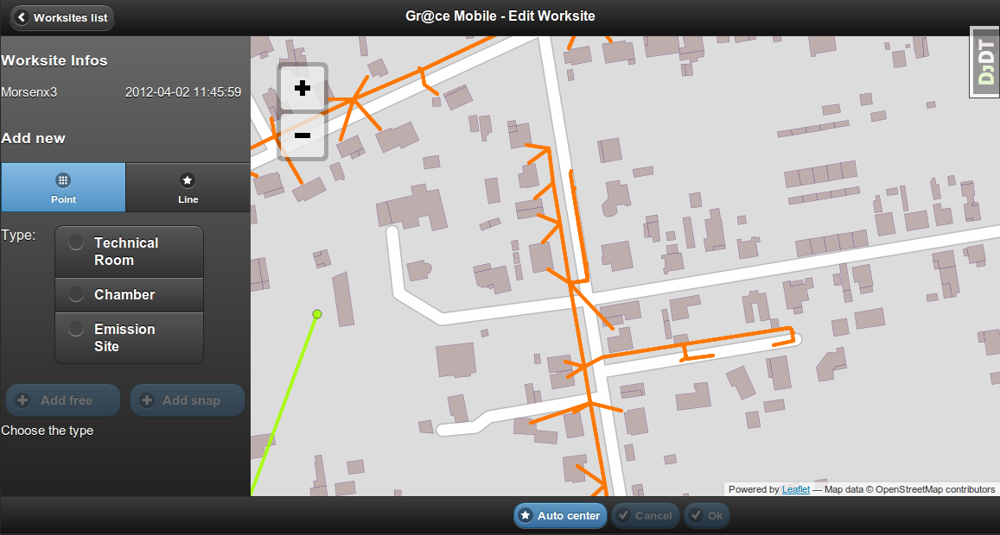
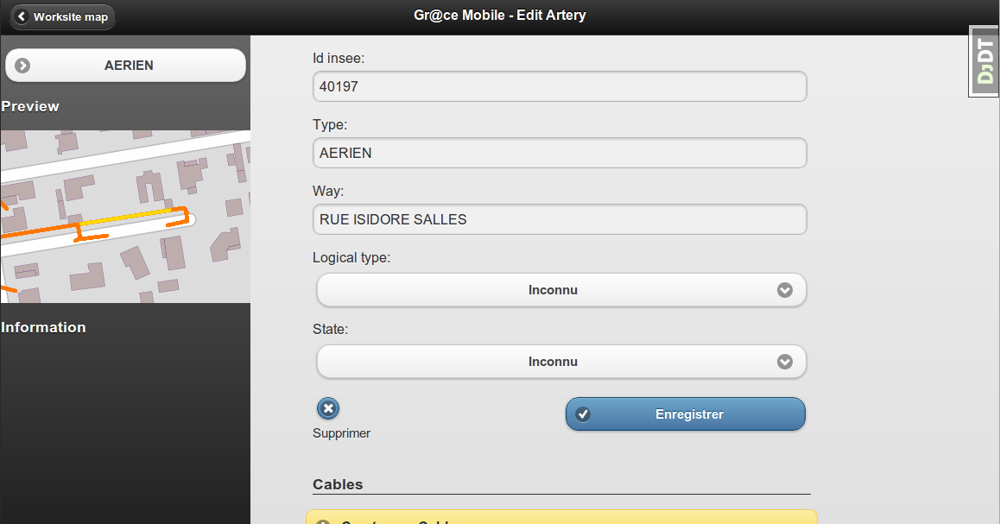

Makina Corpus souhaite ne pas reproduire dans ses applications Web les paradigmes des logiciels SIG bureautiques, lorsque cela ne s'impose pas.
Possibilité de mise en page limitées
Tout est facilement paramétrable


GeoExt est très rigide et offre des possibilités de mise en page limitées


En utilisant jQuery UI, il est possible d'intégrer le design d'un site dans les widgets de contrôle de l'application


